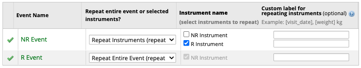
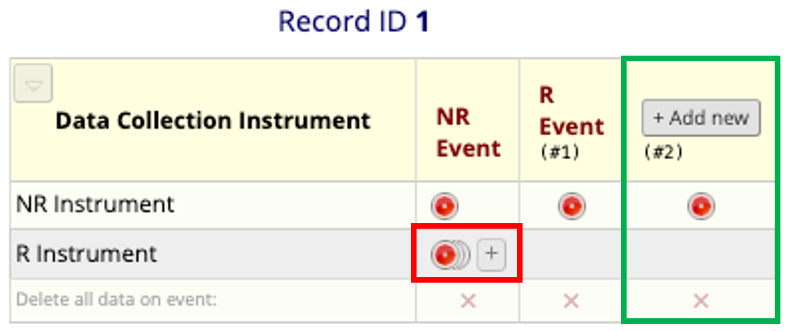
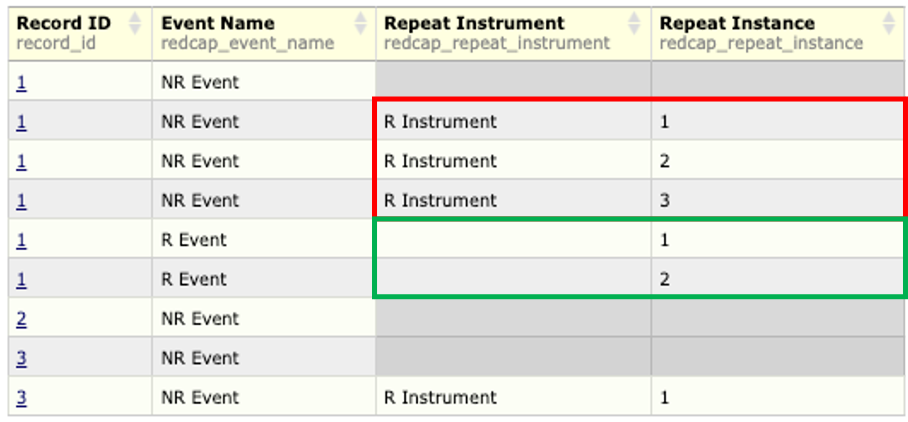
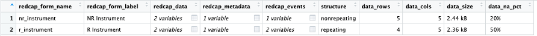
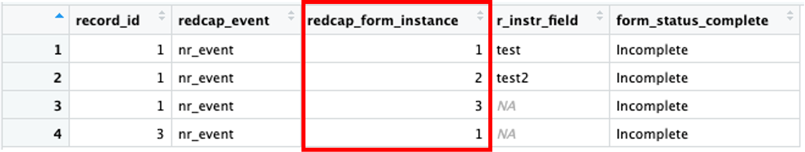
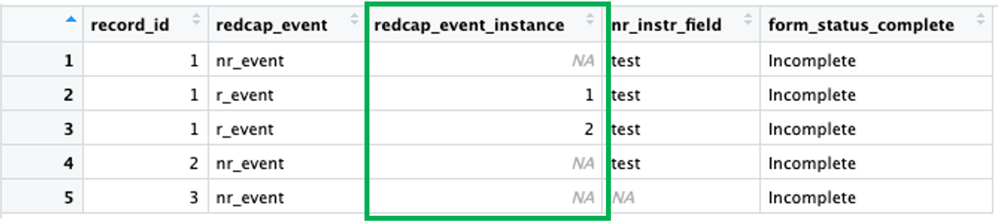

install.packages("REDCapTidieR")REDCapTidieR 0.3.0
REDCap
REDCapTidieR
R
REDCapTidieR v0.3.0 release announcement and change descriptions.
We’re thrilled to announce the release of REDCapTidieR v0.3.0 on CRAN! REDCapTidieR provides a user-friendly way to import data from a REDCap project into the R environment.
You can install the current version from CRAN with:
Repeating events support 🎉
What this means in REDCap
One of the biggest updates to REDCapTidieR is support for REDCap “repeating events.” For the uninitiated, REDCap allows for two types of repeating elements: instruments and events. Note that each of these is only available to longitudinal databases. When designing a REDCap database, developers have the option to specify whether an event repeats all instruments together or repeats instruments independently of each other. From REDCap, this looks like:

And for a given record that has both repeating instruments and repeating events, this takes the visual form:

Where the repeating instrument is shown in the red box and the repeating event is shown in the green box.
From the API, repeating events aren’t captured much differently from repeating instruments. In fact, no new column names are added to the data export. The same default columns of redcap_repeat_instrument and redcap_repeat_instance are used to indicate a repeating instrument when both are filled with data. It is the lack of data in redcap_repeat_instrument while data remains in redcap_repeat_instance which indicates a repeating event. In the image below, a sample REDCap export is shown where the repeating instrument data is shown in the red box and the repeating event data is shown in the green box:

It is important to note that repeating instruments cannot be included in repeating events, and REDCapTidieR will throw an error if this is forced and detected!
What this means in REDCapTidieR
For REDCapTidieR 0.3.0, we decided it is better to be explicit about what our columns mean. For this reason, redcap_repeat_instance has been split into redcap_form_instance and redcap_event_instance for applicable databases. This is a breaking change in the output of the package.
For the above sample database, the typical REDCapTidieR::read_readcap() output stays the same:

However, for the repeating instrument associated with the r_instrument form name, the new redcap_form_instance variable can be seen in the red box:

And the new redcap_event_instance variable associated with the nr_instrument form name can be seen in the green box:

What this means for you
The additional capabilities provided by repeating events support brought us back to the drawing board for how we wanted to best tackle REDCap data tibbles. A cornerstone decision for REDCapTidieR’s design is to remove any sparsity from a REDCap output, as given by the default block matrix. By introducing redcap_event_instance, we are actively choosing to reintroduce the potential for NA/missing data. This rationale is based on the need to have data tibble columns preserved with singular meaning. Any one column should not be dependent on another for identification of structure. The block matrix and associated use of redcap_repeat_instrument and redcap_repeat_instance is not in line with the reduction in ambiguity that REDCapTidieR seeks to provide developers.
This means that for longitudinal REDCap databases, any use of redcap_repeat_instance needs to be updated to use the appropriate redcap_form_instance/redcap_event_instance variables.
The associated granularity for the updated identifier columns is illustrated in greater detail in the REDCapTidieR Diving Deeper vignette as well as depicted here:
| Instrument Structure | Event Structure | Classic | Longitudinal, one arm | Longitudinal, multi-arm |
|---|---|---|---|---|
| Nonrepeating | Nonrepeating | record_id |
record_id +redcap_event |
record_id +redcap_event +redcap_arm |
| Repeating | Nonrepeating | record_id +redcap_form_instance |
record_id +redcap_form_instance +redcap_event |
record_id +redcap_form_instance +redcap_event +redcap_arm |
| Nonrepeating | Repeating | N/A | record_id +redcap_event_instance +redcap_event |
record_id +redcap_event_instance +redcap_event +redcap_arm |
| Repeating | Repeating | Not Supported | Not Supported | Not Supported |
Performance improvements and enhancements
- Improved error message suite:
- Helpful error message provided for various conditions related to REDCap API calls
- Helpful error messages added for checks across all exported functions
- Unexpected error messages provided with direction to submitting bug reports
- Improved error messages for label parsing
- The default
select_choices_and_calculationsexported by the REDCap API for metadata purposes has been reintegrated. It was dropped in v0.2.0.
Bug Fixes
- Fixed a bug where the
suppress_redcapr_messagesargument forread_redcapwas not working appropriately - Fixed a bug where REDCap checkbox labels without white space would be incorrectly parsed
- Added a warning when REDCapTidieR detects a multiple choice field that has duplicated labels